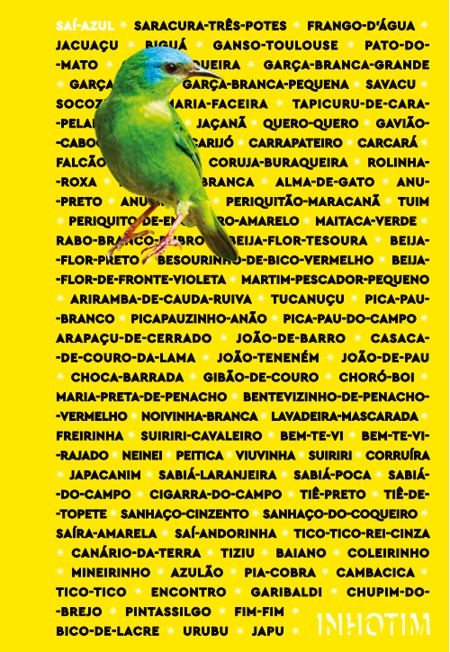

Listening with machines, composing with birdsresearch and compositional approaches in nós, passarinho, for flute and live electronics.* José Henrique Padovani (jhp@ufmg.br)
* research funded by: CNPq and FAPEMIG
1. Context Compositional, circunstancial, and research contexts.2. Composing with birds, listening with machines Overview of the creative process.3. Inscriptions Inscription: writing, transcription, notation, recording, coding/patching, etc.4. Outdoor Electronics Open form and creative process; structure of the electronic processes.5. Final remarks Future unfoldings; crafting sensory and cognitive extensions to listen and compose.
## 1. Context
Poeminho do contra
> Todos esses que aí estão
>
> atravancando o meu caminho
>
> Eles passarão...
>
> Eu passarinho!
Mário Quintana, Caderno H (2013)
FAPEMIG 001/2021 - Demanda Universal research fund Strategies for the development, adaptation, and application of machine
listening/learning models and techniques in analytical-creative processes
focused on instrumental, electroacoustic, audiovisual, and interactive music.
CNPq/MCTI/FNDCT Nº 18/2021 research fund Study, development and application of real-time audiovisual techniques and processes in interactive music
.
## 2. Composing with birds, listening with machines
- extensive use of Python (libraries: librosa, essentia, abjad, xenocanto, etc.)
- development of personal mechanisms for sound resynthesis, partial visualization, and musical transcription
- xenocanto.org
- Python access to xeno-canto.org
- "Aves de Inhotim" [https://conteudo.inhotim.org.br/guia-de-aves](https://conteudo.inhotim.org.br/guia-de-aves)

## 3. Inscriptions
- consolidation in spreadsheet and file conversion
- simplest way: use sonograms as computer-aided composition resouce
- use of Spectral Modelling Synthesis algorithms/processes and development of my own plot and transcription algorithms
## 4. Outdoor Electronics
contingences: short-time to accomplish the composition; outdoor performance; 20 min piece; people around
...to build things to listen, to learn, to compose, to perform:
a way to build extensions with which we couple with the word and with things, people and beings around us, creating not only new perceptions, creative possibilites and intellections but, also, new affections.